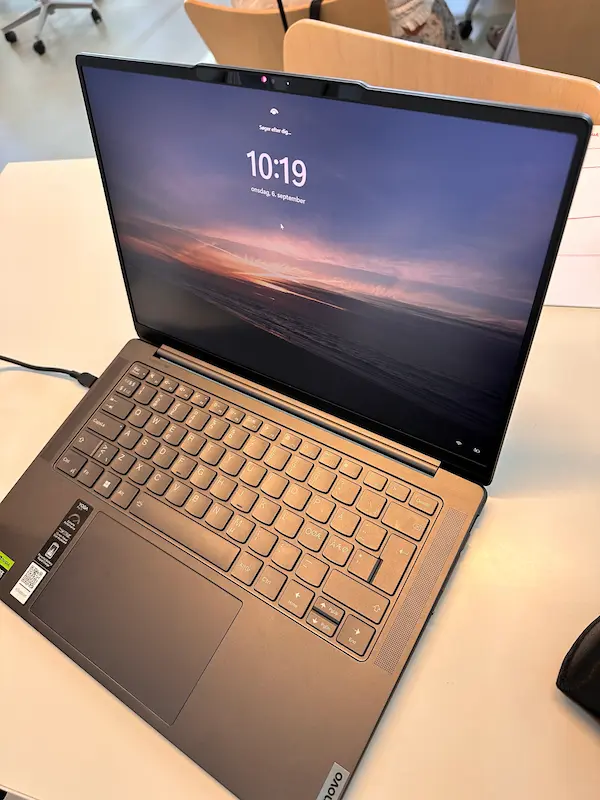

Min computer

Type
Min computer er en bærbar pc fra Lenovo. Den er helt ny for mig, da jeg bestilte den inden studiestart. Den virker meget kompatibel ift. håndteringen af studiets redskaber, programmer, mv. Før denne Lenovo-pc, havde jeg en bærbar HP - og jeg må erkende, at der er en verden til forskel ift. deres kunnen. Jeg er meget glad for denne pc, og jeg vil også i fremtiden holde mig til Lenovo som arbejdscomputer, da den kan det hele.
Specifikationer
- Udgave
- Windows 11 Home
- RAM
- 16 GB
- Systemtype
- 64-bit operativsystem, x64-baseret processor
- Processor
- 13th Gen Intel(R) Core(TM) i7-13700H, 2.40 GHz